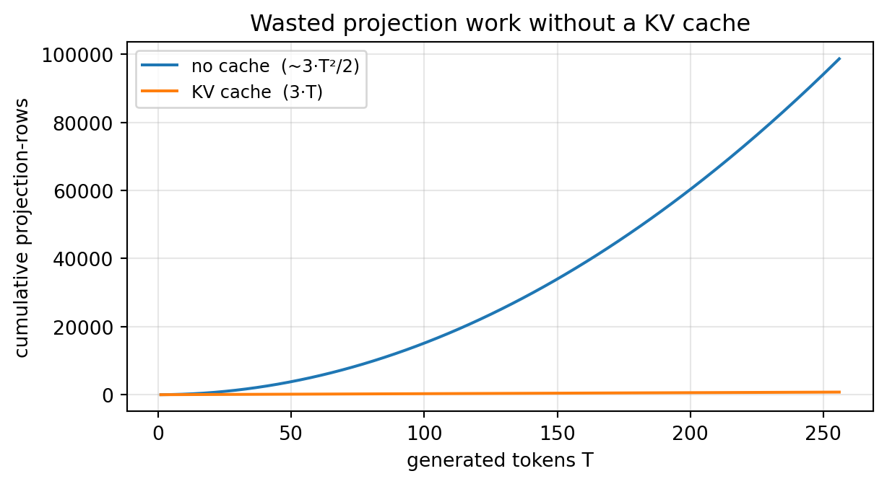
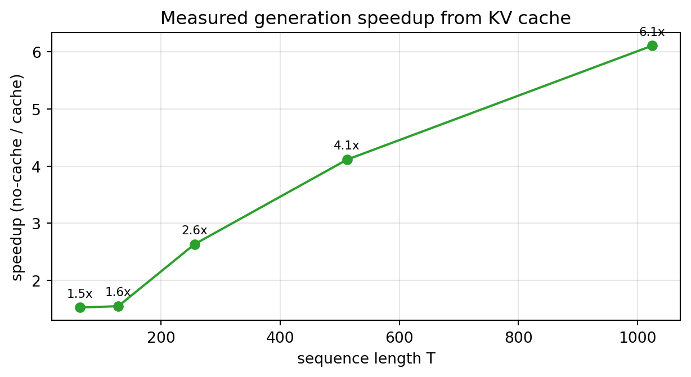

KV Cache: How It Speeds Up Inference and the Memory Trade-off
Data Science
Artificial Intelligence
LLM
Transformer
Inference
Why autoregressive decoding wastes enormous amounts of compute without a KV cache, and how caching keys and values turns per-step work from O(T²) to O(T). We build a toy decoder in NumPy to prove the cache is numerically exact, measure the wall-clock speedup, then model the memory it costs and show how MQA and GQA shrink that cost.
Author
Prof. Shin
Published
August 6, 2026
[Concept Visualization] Without a cache every step recomputes all keys and values (O(T²) work); a KV cache projects only the new token and appends it (O(T)), trading a linear memory footprint for the speedup.
A large language model generates text one token at a time. To produce the next token it runs a forward pass over everything written so far, samples a token, appends it, and repeats. The obvious way to implement this—feed the whole sequence through the model at every step—hides a startling amount of waste: at step t the model recomputes the key and value vectors for all t previous tokens, even though those tokens have not changed and their keys and values are identical to what they were a step earlier. The KV cache removes that redundancy. It is the single most important inference optimization in modern transformer serving, and its logic is simple enough to derive from scratch. This post does exactly that: we build a minimal causal decoder, show that caching is numerically identical to recomputation, measure the speedup, and then confront the memory bill the cache runs up.
Why Autoregressive Decoding Repeats Itself
Self-attention maps each token to a query, a key, and a value through three learned projections, then mixes values according to how strongly each query matches each key. In a causal decoder, the query for the newest token attends to the keys of every token at or before it. The important structural fact is that the key and value for a given token depend only on that token’s representation—not on anything that comes after it. Once token 5’s key and value are computed, they never change, no matter how many more tokens the model generates.
Naive decoding ignores this. At every step it re-projects the entire prefix, so producing T tokens performs roughly 3 · (1 + 2 + … + T) ≈ 3·T²/2 projection operations. The keys and values for early tokens get recomputed hundreds of times to identical results. This is the redundancy the cache eliminates.
The Cache: Project the New Token, Append, Reuse
The fix is to store each token’s key and value the first time they are computed and reuse them thereafter. At every step the model projects only the single new token—three projections instead of 3·t—appends its key and value to a running cache, and attends against the accumulated cache. The output is mathematically unchanged; only the wasted recomputation disappears.
The cleanest way to be sure of that claim is to implement both paths and compare them. Below is a toy single-head causal decoder in NumPy. The “no cache” loop recomputes K and V for the whole prefix at every step; the “KV cache” loop projects only the new token and appends. We count projection work as a proxy for compute and check that the two produce identical outputs.
import numpy as npdef softmax(x, axis=-1): z = x - x.max(axis=axis, keepdims=True) e = np.exp(z)return e / e.sum(axis=axis, keepdims=True)rng = np.random.default_rng(0)d, T =64, 128Wq = rng.standard_normal((d, d)) / np.sqrt(d)Wk = rng.standard_normal((d, d)) / np.sqrt(d)Wv = rng.standard_normal((d, d)) / np.sqrt(d)X = rng.standard_normal((T, d)) / np.sqrt(d) # token embeddings arriving one by one# (A) no cache: recompute K, V for the whole prefix at every stepproj_A =0outA = np.zeros((T, d))for t inrange(1, T +1): prefix = X[:t] Q = prefix @ Wq K = prefix @ Wk # recomputed every step V = prefix @ Wv # recomputed every step proj_A +=3* t # 3 projections over t tokens scores = (Q[-1] @ K.T) / np.sqrt(d) outA[t -1] = softmax(scores) @ V# (B) KV cache: project only the new token, append to the cacheproj_B =0K_cache = np.zeros((T, d)); V_cache = np.zeros((T, d))outB = np.zeros((T, d))for t inrange(1, T +1): x = X[t -1] q = x @ Wq; k = x @ Wk; v = x @ Wv # 3 projections over 1 token proj_B +=3 K_cache[t -1] = k; V_cache[t -1] = v scores = (q @ K_cache[:t].T) / np.sqrt(d) outB[t -1] = softmax(scores) @ V_cache[:t]print("outputs identical (allclose):", np.allclose(outA, outB, atol=1e-10))print(f"projection-rows no-cache={proj_A} kv-cache={proj_B} ratio={proj_A/proj_B:.1f}x (T={T})")print(f"no-cache grows as ~3*T^2/2 = {3*T*T//2}, kv-cache as 3*T = {3*T}")
outputs identical (allclose): True
projection-rows no-cache=24768 kv-cache=384 ratio=64.5x (T=128)
no-cache grows as ~3*T^2/2 = 24576, kv-cache as 3*T = 384
The two outputs are bit-for-bit equivalent, which is the whole point: the cache is not an approximation. Yet at a sequence length of only 128 tokens the naive path already does tens of times more projection work. The cache buys speed for free on the accuracy axis.
From O(T²) to O(T): Counting the Wasted Work
The projection count makes the asymptotics concrete. Cumulative work without a cache grows as the sum 3·(1 + 2 + … + T), a quadratic in the number of generated tokens, while the cache does a constant three projections per step, giving a straight line. Plotting both makes the gap visible: the quadratic curve peels away from the linear one and never comes back.
import matplotlib.pyplot as pltTs = np.arange(1, 257)nocache = np.cumsum(3* Ts) # sum of 3t over steps -> ~3*T^2/2cache =3* Ts # 3 projections for one new token each stepfig, ax = plt.subplots(figsize=(6.5, 3.6))ax.plot(Ts, nocache, label="no cache (~3·T²/2)")ax.plot(Ts, cache, label="KV cache (3·T)")ax.set_xlabel("generated tokens T")ax.set_ylabel("cumulative projection-rows")ax.set_title("Wasted projection work without a KV cache")ax.legend(fontsize=9); ax.grid(alpha=0.3)fig.tight_layout(); plt.show()

Figure 1: Cumulative projection work while generating T tokens: quadratic without a cache, linear with one.
This is why the cache matters more the longer the generation. For a short reply the waste is tolerable; for a multi-thousand-token document the quadratic term dominates completely, and recomputation would make generation impractically slow.
Measuring the Speedup
Projection counts are a proxy; wall-clock time is what users feel. The next experiment generates sequences of increasing length twice—once recomputing everything, once with a cache—and reports the ratio of their run times. Because the model dimension here is modest (d = 256) and NumPy runs on CPU, the absolute numbers are illustrative rather than production-grade, but the trend is the whole story: the speedup widens as the sequence grows, exactly as the quadratic-versus-linear analysis predicts.
import timed =256def gen_no_cache(T): Wq = rng.standard_normal((d, d))/np.sqrt(d); Wk = rng.standard_normal((d, d))/np.sqrt(d); Wv = rng.standard_normal((d, d))/np.sqrt(d) X = rng.standard_normal((T, d))/np.sqrt(d); out = np.zeros((T, d))for t inrange(1, T +1): p = X[:t]; Q = p @ Wq; K = p @ Wk; V = p @ Wv out[t -1] = softmax((Q[-1] @ K.T)/np.sqrt(d)) @ Vreturn outdef gen_cache(T): Wq = rng.standard_normal((d, d))/np.sqrt(d); Wk = rng.standard_normal((d, d))/np.sqrt(d); Wv = rng.standard_normal((d, d))/np.sqrt(d) X = rng.standard_normal((T, d))/np.sqrt(d) Kc = np.zeros((T, d)); Vc = np.zeros((T, d)); out = np.zeros((T, d))for t inrange(1, T +1): x = X[t -1]; q = x @ Wq; Kc[t -1] = x @ Wk; Vc[t -1] = x @ Wv out[t -1] = softmax((q @ Kc[:t].T)/np.sqrt(d)) @ Vc[:t]return outTb = [64, 128, 256, 512, 1024]; sp = []for T in Tb: t0 = time.perf_counter(); gen_no_cache(T); t1 = time.perf_counter(); gen_cache(T); t2 = time.perf_counter() sp.append((t1 - t0)/(t2 - t1))fig, ax = plt.subplots(figsize=(6.5, 3.6))ax.plot(Tb, sp, "o-", color="C2")ax.set_xlabel("sequence length T"); ax.set_ylabel("speedup (no-cache / cache)")ax.set_title("Measured generation speedup from KV cache")ax.grid(alpha=0.3)for x, y inzip(Tb, sp): ax.annotate(f"{y:.1f}x", (x, y), textcoords="offset points", xytext=(0, 7), fontsize=8, ha="center")fig.tight_layout(); plt.show()

Figure 2: Measured generation speedup from a KV cache (NumPy, single head, d=256). The gain grows with sequence length.
At the longest length tested the cache is already more than an order of magnitude faster, and on real hardware with real models—many layers, many heads, GPU kernels—the effect compounds further. This is why every production LLM serving stack keeps a KV cache; without it, long-context generation would be dominated by recomputing the past.
The Bill Comes Due: Cache Memory
Nothing is free. The cache trades compute for memory, and the memory it needs is large and grows linearly with everything you might want to scale. For each token the model must store a key and a value vector in every layer and every attention head, so the total footprint is
\[\text{KV bytes} = 2 \cdot L \cdot H \cdot d_{\text{head}} \cdot T \cdot \text{batch} \cdot \text{bytes\_per\_element},\]
where the leading 2 counts keys and values separately, L is the number of layers, H the number of key/value heads, and T the sequence length. Every term is a dimension you scale in practice—deeper models, longer context, larger batches—so the cache can quietly become the dominant consumer of GPU memory during inference. The function below evaluates this model for several well-known configurations at a 8192-token context in fp16.
A 7B model with full multi-head attention needs several gigabytes of KV cache for a single 8k-token sequence—before you account for batching, where the footprint multiplies by the number of concurrent requests. For long-context, high-throughput serving, KV cache memory, not model weights, is frequently the binding constraint.
Shrinking the Cache: MHA → MQA → GQA
The memory formula points directly at the cheapest lever: the number of key/value heads, H. Standard multi-head attention (MHA) gives every query head its own key and value heads. Multi-query attention (MQA) keeps all the query heads but shares a single key/value head across them, cutting the cache by the head count [Shazeer, 2019]. That is a dramatic saving, but collapsing to one KV head can cost quality and destabilize training. Grouped-query attention (GQA) is the compromise now used by most modern models: query heads are partitioned into a handful of groups, each sharing one key/value head, interpolating between MHA and MQA [Ainslie et al., 2023]. The plot below traces cache growth for the same configurations, and the MHA-versus-GQA contrast at equal depth makes the lever explicit.
Figure 3: KV cache grows linearly with sequence length; fewer KV heads (GQA/MQA) shift the whole line down.
Same 32L/128 at seq=8192: MHA 32 heads = 4.29 GB vs GQA 8 kv-heads = 1.07 GB (4x)
Moving from 32 key/value heads to 8 divides the cache by four while keeping all 32 query heads, which is why models like Mistral and the larger Llama variants adopt GQA. The architecture is chosen, in part, to keep the KV cache affordable at long context.
Beyond the Basics
Reducing KV heads is only the first move. Because the cache dominates inference memory, an entire line of systems work targets it. Efficient serving analyses treat the KV cache as a first-class resource to be budgeted and scheduled around [Pope et al., 2023]. PagedAttention borrows the operating-system idea of paging to store the cache in non-contiguous blocks, eliminating the fragmentation that otherwise wastes much of the reserved memory and enabling far higher serving throughput [Kwon et al., 2023]. Complementary techniques—quantizing cached keys and values to 8 or even 4 bits, evicting or compressing the least useful entries, and sharing cache across requests with common prefixes—all attack the same linear-in-T term from different angles.
Conclusion
The KV cache earns its central place in transformer inference through a clean trade: it converts the per-step work of autoregressive decoding from quadratic to linear by never recomputing a key or value it has already seen, and our parity check confirms it does so with zero effect on the output. The cost is a memory footprint that scales as 2 · L · H · d_head · T · batch · bytes, which at long context and high batch can exceed the model weights themselves. Understanding that formula is what makes the modern design landscape legible: MQA and GQA shrink the H term, paging and quantization attack the constant and the byte-width, and every one of them exists because someone looked at the cache’s linear growth and decided it was too expensive to leave alone. The cache is the reason long-context generation is fast; managing its memory is the reason long-context generation is possible at all.
References
Shazeer, N. (2019). Fast Transformer Decoding: One Write-Head is All You Need. arXiv preprint arXiv:1911.02150.
Ainslie, J., Lee-Thorp, J., de Jong, M., Zemlyanskiy, Y., Lebrón, F., & Sanghai, S. (2023). GQA: Training Generalized Multi-Query Transformer Models from Multi-Head Checkpoints. Proceedings of the 2023 Conference on Empirical Methods in Natural Language Processing (EMNLP). arXiv:2305.13245.
Pope, R., Douglas, S., Chowdhery, A., Devlin, J., Bradbury, J., Levskaya, A., Heek, J., Xiao, K., Agrawal, S., & Dean, J. (2023). Efficiently Scaling Transformer Inference. Proceedings of Machine Learning and Systems (MLSys). arXiv:2211.05102.
Kwon, W., Li, Z., Zhuang, S., Sheng, Y., Zheng, L., Yu, C. H., Gonzalez, J. E., Zhang, H., & Stoica, I. (2023). Efficient Memory Management for Large Language Model Serving with PagedAttention. Proceedings of the 29th Symposium on Operating Systems Principles (SOSP). arXiv:2309.06180.
Vaswani, A., Shazeer, N., Parmar, N., Uszkoreit, J., Jones, L., Gomez, A. N., Kaiser, Ł., & Polosukhin, I. (2017). Attention Is All You Need. Advances in Neural Information Processing Systems (NeurIPS), 30, 5998–6008.